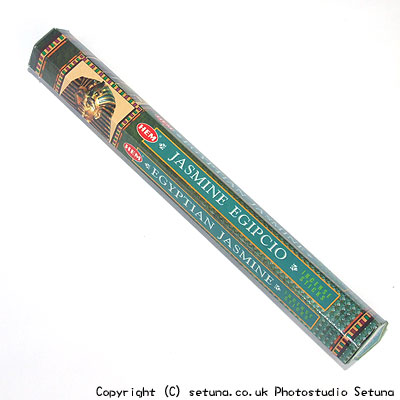

そのまま嗅ぐと割といい感じでジャスミン系の香りがします。
火を点けると昔からみかけるコーンタイプのラベンダーによく似た香りです。
狭い部屋で焚くと少々煙っぽいのが気になりますが、広い部屋だと大して問題はありません。
香りはほんのりと感じる程度なので消臭としての効果は、よほど毎日使い続けない限りあまり期待できませんが、換気の良い部屋で焚いているとふとしたときに気持ちよく感じる香りです。
前述した通り、狭い部屋で焚いたり、窓を閉め切って焚くと煙臭さが気になってしまいます。要注意(笑)
実のところこのタイプのお香は野外で焚くと緑と同化し、気持ちよくいい感じになります。
